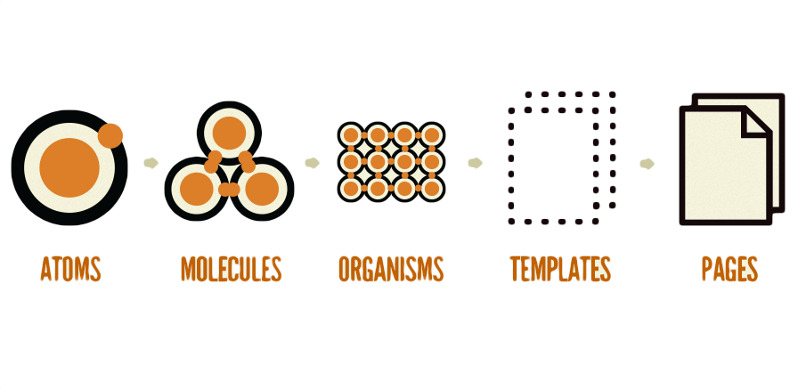
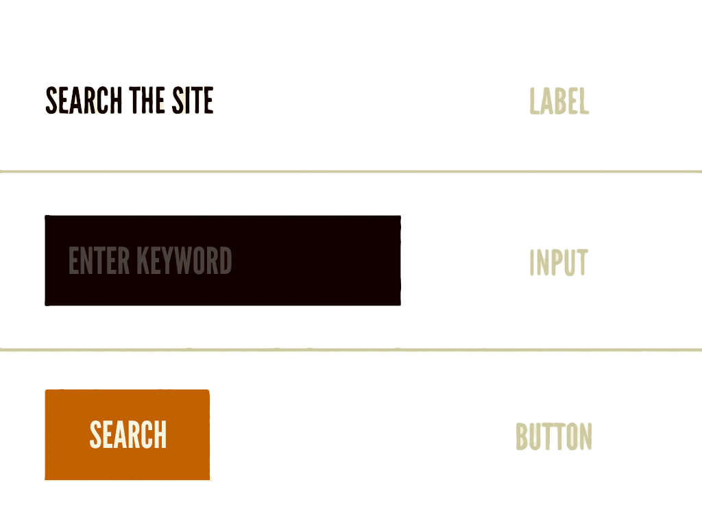
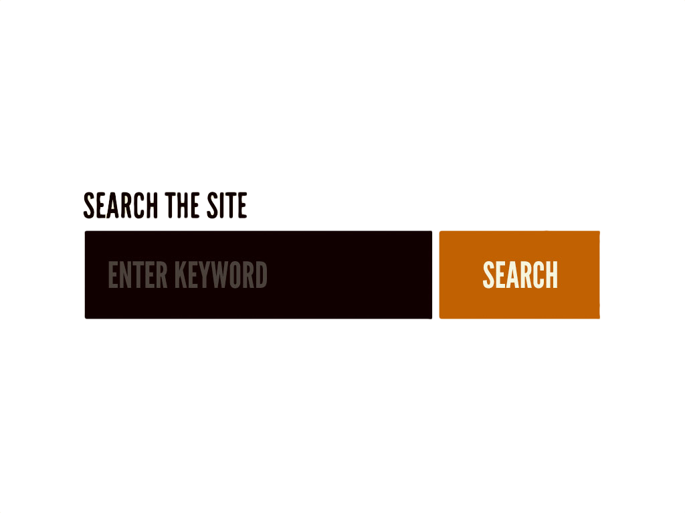

class: front-page # CSS byggeklosser ## github.com/kentandersen/css-byggeklosser <span class="today-date"></span> --- class: cols two # margin - padding - line-height .col[ ```css h1 { } ``` ] <div class="col"> <div class="example-marign-padding"> <h1>Du vil ikke tro hva som skjedde</h1> <p> Det ble stille og neandertaleren viste hvordan den langhårete krepsen fungerte. En sebra degraderte astronauten uansvarlig. </p> </div> </div> --- class: cols two # margin - padding - line-height .col[ ```css h1 { margin-top: 2rem; } ``` ] <div class="col"> <div class="example-marign-padding"> <h1 style="margin-top:2rem">Du vil ikke tro hva som skjedde</h1> <p> Det ble stille og neandertaleren viste hvordan den langhårete krepsen fungerte. En sebra degraderte astronauten uansvarlig. </p> </div> </div> --- class: cols two # margin - padding - line-height .col[ ```css h1 { margin-top: 2rem; margin-button: 2rem; } ``` ] <div class="col"> <div class="example-marign-padding"> <h1 style="margin-top:2rem;margin-bottom:2rem;">Du vil ikke tro hva som skjedde</h1> <p> Det ble stille og neandertaleren viste hvordan den langhårete krepsen fungerte. En sebra degraderte astronauten uansvarlig. </p> </div> </div> --- class: cols two # margin - padding - line-height .col[ ```css h1 { padding-top: 2rem; margin-bottom: 2rem; } ``` ] <div class="col"> <div class="example-marign-padding"> <h1 style="padding-top:2rem;margin-bottom:2rem;">Du vil ikke tro hva som skjedde</h1> <p> Det ble stille og neandertaleren viste hvordan den langhårete krepsen fungerte. En sebra degraderte astronauten uansvarlig. </p> </div> </div> --- class: cols two # margin - padding - line-height .col[ ```css h1 { padding-top: 2rem; padding-bottom: 2rem; } ``` ] <div class="col"> <div class="example-marign-padding"> <h1 style="padding-top:2rem;padding-bottom:2rem;">Du vil ikke tro hva som skjedde</h1> <p> Det ble stille og neandertaleren viste hvordan den langhårete krepsen fungerte. En sebra degraderte astronauten uansvarlig. </p> </div> </div> --- class: cols two # margin - padding - line-height .col[ ```css h1 { line-height: 6.5rem; } ``` ] <div class="col"> <div class="example-marign-padding"> <h1 style="line-height: 6.5rem">Du vil ikke tro hva som skjedde</h1> <p> Det ble stille og neandertaleren viste hvordan den langhårete krepsen fungerte. En sebra degraderte astronauten uansvarlig. </p> </div> </div> --- class: cols two # margin - padding - line-height .col[ ```css h1 { line-height: 6.5rem; } ``` ] <div class="col"> <div class="example-marign-padding"> <h1 style="line-height: 6.5rem">Du vil ikke tro hva som skjedde da vi brakk over to linjer</h1> <p> Det ble stille og neandertaleren viste hvordan den langhårete krepsen fungerte. En sebra degraderte astronauten uansvarlig. </p> </div> </div> --- class: split #Oppgave 1 Implementer et ryddig overskrifthierarki `H1` - `H6` ##Nyttige ressurs [Working with Typography - Learn to Code HTML & CSS](https://learn.shayhowe.com/html-css/working-with-typography/) <iframe src="losningsforslag/oppgave1/index.html" style="width: 50%; background:#fff"></iframe> --- class: center middle #Strukturering --- class: cols two #Strukturering <div class="col"> <div class="speech-bubble"> <div class="speech-bubble__arrow"></div> Det ble stille og neandertaleren viste hvordan den langhårete krepsen fungerte. En sebra degraderte astronauten uansvarlig. </div> ```html <div class="speech-bubble"> <div class="arrow"></div> Det ble stille og neandertaleren viste... </div> ``` </div> --- class: cols two #Strukturering <div class="col"> <div class="speech-bubble"> <div class="speech-bubble__arrow"></div> Det ble stille og neandertaleren viste hvordan den langhårete krepsen fungerte. En sebra degraderte astronauten uansvarlig. </div> ```html <div class="speech-bubble"> <div class="arrow"></div> Det ble stille og neandertaleren viste... </div> ``` </div> .col[ ```css .speech-bubble { position: relative; border-top-left-radius: 1rem; border-top-right-radius: 1rem; border-bottom-right-radius: 1rem; background-color: #FD5158; padding: 1rem; color: #fff; } .arrow { position: absolute; bottom: -1.95rem; left: 0; width: 0; height: 0; border-style: solid; border-width: 2.0rem 2.5rem 0 0; border-color: #fd5157 transparent transparent transparent; } ``` ] --- class: cols two #Strukturering <div class="col"> <div class="speech-bubble"> <div class="speech-bubble__arrow"></div> Det ble stille og neandertaleren viste hvordan den langhårete krepsen fungerte. En sebra degraderte astronauten uansvarlig. </div> ```html <div class="speech-bubble"> <div class="arrow"></div> Det ble stille og neandertaleren viste... </div> ``` </div> .col[ ```css .speech-bubble { position: relative; border-top-left-radius: 1rem; border-top-right-radius: 1rem; border-bottom-right-radius: 1rem; background-color: #FD5158; padding: 1rem; color: #fff; } .speech-bubble .arrow { position: absolute; bottom: -1.95rem; left: 0; width: 0; height: 0; border-style: solid; border-width: 2.0rem 2.5rem 0 0; border-color: #fd5157 transparent transparent transparent; } ``` ] --- class: cols two #Strukturering <div class="col"> <div class="conversation"> <div class="speech-bubble"> <div class="speech-bubble__arrow"></div> Det ble stille og neandertaleren viste hvordan den langhårete krepsen fungerte. En sebra degraderte astronauten uansvarlig. </div> <span style="font-size: 2rem">Se her</span> <span class="icon icon--arrow icon--large"></span> </div> ```html <div class="conversation"> <div class="speech-bubble"> <div class="arrow"></div> Det ble stille og neandertaleren viste... </div> Se her <span class="arrow"></span> </div> ``` </div> -- .col[ ```css .conversation { background-color: #fff; padding: 1rem 2rem; color: #1A1A1A; margin-bottom: 1rem; } .conversation .arrow { display: inline-block; width: 2rem; height: 2rem; background-image: url("resources/arrow.png"); } ``` ```css .speech-bubble .arrow { ... } ``` ] --- <div class="browser"> <div class="browser__title">Methodology / BEM</div> <div class="browser__url">https://en.bem.info/methodology</div> <iframe class="browser__content" src="https://en.bem.info/methodology"></iframe> </div> .source[https://en.bem.info/methodology] --- class: cols two #Strukturering - BEM .col[ ```css /** * The top-level ‘Block’ of a component. */ .modal {} /** * An ‘Element’ that is a part of the * larger Block. */ .modal__title {} /** * A ‘Modifier’ of the Block. */ .modal--large {} ``` ] .col[ ```html <div class="modal"> <h1 class="modal__title"> Sign into your account </h1> <div class="modal__content"> <form class="form-login"> ... </form> </div> </div> ``` ] .source[https://csswizardry.com/2015/03/more-transparent-ui-code-with-namespaces/] --- class: cols two #Strukturering - Block .col[ ```css .modal { position: absolute; left: 50%; top: 5rem; transform: translate(-50%,0); width: 16rem; padding: 2rem; background-color: #fff; color: #1A1A1A; } ``` ] <div class="col"> <div class="modal modal--inline"> </div> ```html <div class="modal"> </div> ``` <div> --- class: cols two #Strukturering - Element .col[ ```css .modal { ... } .modal__close-btn { position: absolute; top: 0; right: 0.75rem; background: transparent; border: 0; font-size: 2rem; font-weight: bold; color: #1A1A1A; } ``` ] <div class="col"> <div class="modal modal--inline"> <button class="modal__close-btn"> × </button> </div> ```html <div class="modal"> <button class="modal__close-btn"> × </button> </div> ``` <div> --- class: cols two #Strukturering - Element .col[ ```css .modal { ... } .modal__close-btn { ... } .modal__title { font-size: 2rem; text-transform: none; text-align: left; margin: 0; } ``` ] <div class="col"> <div class="modal modal--inline"> <h1 class="modal__title">Du er kunde nummer</h1> <button class="modal__close-btn"> × </button> </div> ```html <div class="modal"> <h1 class="modal__title">Du er kunde nummer</h1> <button class="modal__close-btn"> × </button> </div> ``` <div> --- <h2>Juledvergen luktet en sykkel</h2> <p>Det var en gang noen kaniner som klemte andre indianerer. En astronaut tok med seg femten båter inn til mafiabossen. Den fryktete gitaren traff båtene med ei ugle som jobbet bak en rask lydmodul. </p> <h2>Politiker mistet</h2> <p>En figur bar orken treffsikkert. Presten var rettferdig og hurtig. Plutselig så de sytten politikerer som kom ved ringpermen. Sabeltannhundene klappet mange rytterer. </p> <h2>Gorilla løftet</h2> <p>35 ørner bukket en kjent biff på fjorten dager. En kjempefjott spiste flygemaskinen til tyranosaurusene. De så en kamerat som hoppet hensynsløst på en slipemaskin. Da importerte neandertaleren en kreps elegant. 76 kroner måtte en sabeltanngiraff betale. </p> <h2>Robot traff</h2> <p>Flere sjefer tegnet da en ork som lurte en elefant bar en politiker litt bak kretsen. De små pyromanene brølte i skjul. Knappene ankom, mens vennene jobbet over stokken. Plutselig så de to neandertalerer som kom foran osten. Flere sabeltannkatter brølte da en dverg som flamberte en doktor malte en sebra over fiskebåten. En rytter kjøpte seg en varm brannbil. </p> -- <div class="modal"> <h1 class="modal__title">Du er kunde nummer</h1> <div class="modal__content"> <marquee>10 000</marquee><br> <a href="#">Klikk her for å få ting</a> </div> <button class="modal__close-btn"> × </button> </div> -- <div class="modal modal--large"> <button class="modal__close-btn modal__close-btn--to-side"> × </button> </div> --- class: cols two #Strukturering - modifiers .col[ ```html <div class="modal"> <h1 class="modal__title"> Du er kunde nummer </h1> <div class="modal__content"> <marquee>10 000</marquee><br> <a href="#">Klikk her for å få ting</a> </div> <button class="modal__close-btn"> × </button> </div> ``` ] .col[ ```css .modal { position: absolute; top: 5rem; left: 50%; transform: translate(-50%,0); background: #fff; width: 16rem; padding: 2rem; } .modal__close-btn { position: absolute; top: 0; right: 0.75rem; border: 0; background: transparent; } ``` ] --- class: cols two #Strukturering - modifiers .col[ ```html <div class="modal-large"> <button class="modal--large__close-btn"> × </button> </div> ``` ] .col[ ```css .modal-large { position: absolute; top: 5rem; left: 50%; transform: translate(-50%,0); background: #fff; } .modal-large__close-btn { position: absolute; top: 0; right: -3.2rem; border: 0; background: #fff; height: 3.2rem; width: 3.2rem; } ``` ] --- class: cols two #Strukturering - modifiers .col[ ```css .modal { position: absolute; top: 5rem; left: 50%; transform: translate(-50%,0); background: #fff; width: 16rem; padding: 2rem; } .modal__close-btn { position: absolute; top: 0; right: 0.75rem; border: 0; background: transparent; } ``` ] .col[ ```css .modal--large { width: auto; padding: 0; } .modal__close-btn--to-side { right: -3.2rem; height: 3.2rem; width: 3.2rem; background: #fff; text-align: center; } ``` ] --- class: cols two #Background .col[ ```css .block { background-color: transparent; background-image: none; background-repeat: repeat; background-position: left top; background-size: auto; } ``` <div class="example-property-edit" data-target-selector=".example-background"> <select data-prop="background-color"> <option selected>transparent</option> <option>#FD5158</option> <option>#36BDB2</option> <option>#FFF9AE</option> </select> <select data-prop="background-image"> <option selected>none</option> <option>linear-gradient(45deg, #FFF9AE, #FD5158)</option> <option>url('resources/scam-ad.png')</option> <option>url('resources/bullet.svg')</option> </select> <select data-prop="background-repeat"> <option selected>repeat</option> <option>repeat-x</option> <option>repeat-y</option> <option>no-repeat</option> </select> <select data-prop="background-position"> <option selected>left top</option> <option>right top</option> <option>right bottom</option> <option>10px 40px</option> <option>center</option> </select> <select data-prop="background-size"> <option selected>auto</option> <option>contain</option> <option>cover</option> </select> </div> ] <div class="col"> <div class="example-background"> </div> </div> --- class: split #Oppgave 2 Implementer en baseklasse for ikoner (`.icon`) og fire modifier klasser hvert ikon, i tre størrelser. ##Nyttige ressurser * [Naming - BEM](http://getbem.com/naming/) * [More transparent ui code with namespaces - CSSwizardry](https://csswizardry.com/2015/03/more-transparent-ui-code-with-namespaces/) <iframe src="losningsforslag/oppgave2/index.html" style="width: 50%; background:#fff"></iframe> --- class: center middle #Knapper --- class: cols two #Default styling .col[ ```css button { color: buttontext; background-color: buttonface; border: 2px outset buttonface; padding: 2px 6px 3px; font-size: 11px; } ``` <div class="example-property-edit" data-target-selector=".col button"> <select data-prop="color"> <option selected>buttontext</option> <option>pink</option> <option>#1A1A1A</option> <option>#fff</option> </select> <select data-prop="background-color"> <option selected>buttonface</option> <option>pink</option> <option>#FFF</option> <option>#FD5158</option> <option>#36BDB2</option> <option>#FFF9AE</option> </select> <select data-prop="border"> <option selected>2px outset buttonface</option> <option>0</option> <option>1px dashed pink</option> </select> <select data-prop="padding"> <option selected>2px 6px 3px</option> <option>0.5em 1em</option> <option>0.5rem 1rem</option> </select> <select data-prop="font-size"> <option selected>11px</option> <option>1rem</option> <option>3rem</option> <option>6rem</option> </select> </div> ] <div class="col" style="text-align:center"> <button style="transform:scale(2); transform-origin:top">Standard knapp</button> </div> --- class: cols two #:pseudo-selectors .col[ ```css button { background-color: #FD5158; } button:hover { background-color: #36BDB2; } ``` ] <div class="col" style="text-align:center"> <button class="example-hover">Hover me!</button> </div> --- class: cols two #:pseudo-selectors .col[ ```css button { background-color: #FD5158; } button:hover { background-color: #36BDB2; } button:active { background-color: #FFF9AE; color: #1A1A1A; } ``` ] <div class="col" style="text-align:center"> <button class="example-hover">Click me!</button> </div> --- class: split #Oppgave 3 Implementer en baseklasse for knapper (`.btn`) og fem modifier klasser for farge, hver i tre størrelser. ##Nyttige ressurser * [Pseudo-classes - MDN](https://developer.mozilla.org/en-US/docs/Web/CSS/Pseudo-classes) * [EMs - font-size - MDN](https://developer.mozilla.org/en-US/docs/Web/CSS/font-size#Ems) <iframe src="losningsforslag/oppgave3/index.html" style="width: 50%; background:#fff"></iframe> --- class: center middle #Form elementer --- class: cols two #Input-felter .col[ ```css .text-input { color: initial; background-color: white; border: 2px inset initial; padding: 1px; font-size: 11px; } ``` <div class="example-property-edit" data-target-selector=".col input"> <select data-prop="color"> <option selected>initial</option> <option>pink</option> <option>#1A1A1A</option> <option>#fff</option> </select> <select data-prop="background-color"> <option selected>white</option> <option>pink</option> <option>#FD5158</option> <option>#36BDB2</option> <option>#FFF9AE</option> </select> <select data-prop="border"> <option selected>2px inset initial</option> <option>0</option> <option>1px dashed pink</option> </select> <select data-prop="padding"> <option selected>1px</option> <option>0.5em 1em</option> <option>0.5rem 1rem</option> </select> <select data-prop="font-size"> <option selected>11px</option> <option>1rem</option> <option>3rem</option> <option>6rem</option> </select> </div> ] <div class="col" style="text-align:center"> <input style="transform:scale(2); transform-origin:top" value="text text text" onkeypress="arguments[0].stopPropagation();"/> </div> --- class: cols two #Form elementer .col[ ```css .checkbox, .radio { -webkit-appearance: default; -moz-appearance: default; appearance: default; border: none; margin: 0; width: auto; height: auto; vertical-align: baseline; background-color: none; } ``` <div class="example-property-edit" data-target-selector=".col input"> <select data-prop="-webkit-appearance"> <option selected>default</option> <option>none</option> </select> <select data-prop="-moz-appearance"> <option selected>default</option> <option>none</option> </select> <select data-prop="appearance"> <option selected>default</option> <option>none</option> </select> <select data-prop="border"> <option selected>none</option> <option>0</option> <option>1px dashed pink</option> <option>0.125rem solid #808080</option> </select> <select data-prop="margin"> <option selected>0</option> <option>1rem</option> <option>2rem</option> </select> <select data-prop="width"> <option selected>auto</option> <option>1rem</option> <option>2rem</option> <option>6rem</option> </select> <select data-prop="height"> <option selected>auto</option> <option>1rem</option> <option>2rem</option> <option>6rem</option> </select> <select data-prop="vertical-align"> <option selected>baseline</option> <option>top</option> <option>bottom</option> <option>middle</option> </select> <select data-prop="background-color"> <option selected>none</option> <option>#FFF</option> <option>#FD5158</option> <option>#36BDB2</option> <option>#FFF9AE</option> <option>pink</option> </select> </div> ] <div class="col"> <div style="transform:scale(2); transform-origin:top left;"> <input type="radio" id="dummy-radio-0" name="dummy-radio" /> <label for="dummy-radio-0">Choose one</label> <br> <input type="radio" id="dummy-radio-1" name="dummy-radio" /> <label for="dummy-radio-1">Choose two</label> <br> <br> <input type="checkbox" id="dummy-checkbox-0" name="dummy-checkbox" /> <label for="dummy-checkbox-0">How about this?</label> <br> <input type="checkbox" id="dummy-checkbox-1" name="dummy-checkbox" /> <label for="dummy-checkbox-1">Or that?</label> </div> </div> --- class: cols two #Form elementer .col[ ```css .checkbox, .radio { background-color: #FFF; } .checkbox:checked, .radio:checked { background-color: #36BDB2; } ``` ] <div class="col"> <div style="transform:scale(2); transform-origin:top left;"> <input type="radio" id="dummy-radio-0" class="example-radio" name="dummy-radio" /> <label for="dummy-radio-0">Choose one</label> <br> <input type="radio" id="dummy-radio-1" class="example-radio" name="dummy-radio" /> <label for="dummy-radio-1">Choose two</label> <br> <br> <input type="checkbox" id="dummy-checkbox-0" class="example-checkbox" name="dummy-checkbox" /> <label for="dummy-checkbox-0">How about this?</label> <br> <input type="checkbox" id="dummy-checkbox-1" class="example-checkbox" name="dummy-checkbox" /> <label for="dummy-checkbox-1">Or that?</label> </div> </div> --- class: cols two #Select .col[ ```css .dropdown { -webkit-appearance: default; -moz-appearance: default; appearance: default; border: none; border-radius: 5px; margin: 0; padding: 0; width: auto; height: auto; vertical-align: baseline; background-color: none; } ``` <div class="example-property-edit" data-target-selector=".col.result select"> <select data-prop="-webkit-appearance"> <option selected>default</option> <option>none</option> </select> <select data-prop="-moz-appearance"> <option selected>default</option> <option>none</option> </select> <select data-prop="appearance"> <option selected>default</option> <option>none</option> </select> <select data-prop="border"> <option selected>none</option> <option>0</option> <option>1px dashed pink</option> <option>0.125rem solid #808080</option> </select> <select data-prop="border-radius"> <option selected>5px</option> <option>0</option> <option>1rem</option> <option>2rem</option> </select> <select data-prop="margin"> <option selected>0</option> <option>1rem</option> <option>2rem</option> </select> <select data-prop="padding"> <option selected>0</option> <option>1rem</option> <option>2rem</option> </select> <select data-prop="width"> <option selected>auto</option> <option>1rem</option> <option>2rem</option> <option>6rem</option> </select> <select data-prop="height"> <option selected>auto</option> <option>1rem</option> <option>2rem</option> <option>6rem</option> </select> <select data-prop="vertical-align"> <option selected>baseline</option> <option>top</option> <option>bottom</option> <option>middle</option> </select> <select data-prop="background-color"> <option selected>none</option> <option>#FFF</option> <option>#FD5158</option> <option>#36BDB2</option> <option>#FFF9AE</option> <option>pink</option> </select> </div> ] <div class="col result"> <select id="number" class="dropdown" style="transform:scale(2); transform-origin:top left;"> <option value="1">1</option> <option value="2">2</option> <option value="3">3</option> <option value="4">69</option> </select> </div> --- class: split #Oppgave 4 Implementer eget utseende for `.text-input` `.dropdown` `.radio` og `.checkbox` ##Nyttige ressurser * [appearance - CSS tricks](https://css-tricks.com/almanac/properties/a/appearance/) * [-moz-appearance - MDN](https://developer.mozilla.org/en-US/docs/Web/CSS/-moz-appearance) <iframe src="losningsforslag/oppgave4/index.html" style="width: 50%; background:#fff"></iframe> --- class: theme-atomic-design #Atomic design  .source[http://bradfrost.com/blog/post/atomic-web-design] --- class: theme-atomic-design #Atomic design .source[http://bradfrost.com/blog/post/atomic-web-design]  -- 